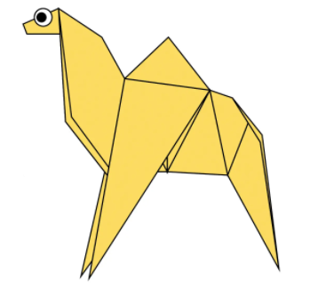
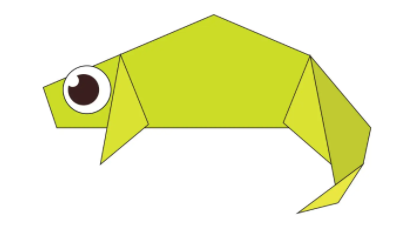
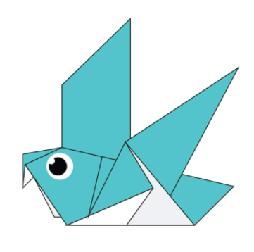
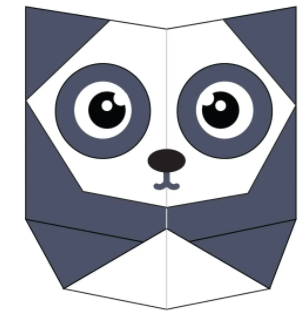

Oragami Designs
Oragami Designs
About Us
Follow Us

Interesting Facts about Camels
- Camel's ears are furry
- Camels can move easily across the sand because of its specially designed feet
- When they find water,they will drink as much as possible

Interesting Facts about Chameleons
- Chameleons are reptiles that are part of the iguana suborder
- Changing skin color is an important part of communication among chameleons
- Most chameleons have a prehensile tail that they use to wrap around tree branches

Interesting Facts about Pigeons
- Pigeons are incredibly complex and intelligent animals
- Pigeons are reowned for their outstanding navigational abilities
- Pigeons have excellent hearing abilities.

Interesting Facts about Teddy Bears
- The term bear-hug was first recorded in 1846.
- The incident of Roosevelt sparing the bear led to the popularity and naming of Teddy bears.
- The Teddy Bears’ Picnic song was originally called The Teddy Bear Two Step.

Interesting Facts about Pandas
- They have great camouflage for their environment
- Their eyes are different to normal bears
- Cubs are well protected in their first month

Interesting Facts about Cicada
- The cicada shells on trees are left behind by the numph
- Adult cicadas only live 4-6 weeks before they die
- There are 15 broods of cicadas on record